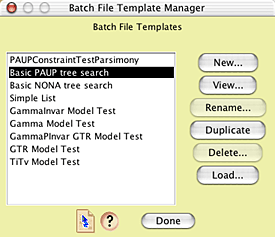

|
|
Batch Architect package for the Mesquite system |
August 2005
This package of modules supplies basic importing and exporting services to Mesquite.
This package automates the generation of files with repeated elements as well as the processing of files with repeated records.
One can ask Mesquite to build a "batch" file that can serve as a command file for another program such as PAUP* that does repetitive analyses. For example, one might simulate 100 matrices under a particular model of evolution, and for each of these matrices, include an entry in a batch file that asks PAUP to analyze that matrix, saving tree files for the matrix. At the same time, another batch file might be created that could be used to ask another program to read in, sequentially, each tree file, and conduct a synthetic analysis on them.
To install the basic Batch Architect package, the "batchArch" directory must be installed in the "mesquite" directory within "Mesquite Folder". It should be present in a basic Mesquite installation.
This feature, in the Batch Architect submenu in the Analysis menu, will export multiple matrices and one or more associated batch files.
In choosing this feature, you will first be led through as serious of dialog boxes in which you will choose how the matrices are to be created. Following your choosing, the Export Matrices & Batch Files dialog box will be presented:

In this dialog box you are to specify the base name to be used both for the matrices and in the batch file template system. For example, in the example shown, 10 matrices will be created, with names "SimMatrix1", "SimMatrix2", "SimMatrix3", and so on.
The file names may have extensions added (e.g., ".nex"), depending upon the matrix format to be used (the matrix format is specified in the batch file template). The extension will be added automatically by Mesquite.
In this dialog you will most importantly also select the batch template to use. A batch template specifies exactly how the batch file or files produced will be structured. To examine or edit the template, use the Edit Templates button.
Some batch templates contain code that requires "code snippets" to be defined. If code snippets are needed by a template, they will be listed in the dialog box. If some are needed but unavailable, the list will appear in red and note them as unavailable:
You can define or edit snippets uing the Edit Snippets button.
Some batch templates require a tree to be chosen by the user; if so, and you have not yet chosen a tree, "TREE NEEDED" will appear in red in the box beside the Choose Tree button:
You can then use the Choose Tree button to choose your tree.
This is similar to the Export Matrices & Batch Files feature expect that no matrices are exported. This can be used to generate batch files for already existing matrices, for example, or to automate processes other than the analyses of matrices.
Batch templates contain the instructions telling Mesquite how to construct the batch files. They are managed in the Batch Template Manager window, which allow ones to create, duplicate, edit, rename, or delete templates:

You can also load templates from template files; this allows you to move templates between copies of Mesquite. For example, if you create a template on one computer, it will be stored as a single text file in the BatchTemplates in the Mesquite_Prefs directory in the Mesquite_Support_Files directory on your disk. You can then move that file to another computer, and load it into Mesquite on that computer using the Load button.
Selecting a template in the Batch File Template Manager and pressing "View" (if it is a pre-defined template) or "Edit..." (if it is a user-defined template) will bring forth the Batch Template Editor, in which the template can be viewed or edited:

See the page on Designing Batch Templates for details on the formats used. Batch templates can be edited using the submenu in Mesquite's Edit menu, or from the Export Matrices & Batch Files or Export Batch Files dialog boxes.
The pre-defined templates can be viewed and duplicated, but not renamed or edited. Their duplicates can be renamed and edited.
Code snippets are designed as file-specific elements that are to be used in place of tagged elements in the batch templates. For example, if in a batch template the following text appeared:
exec setParameterValues; <snippet>search command</snippet> display all;
then within the Mesquite file you could store a code snippet called "search command" whose contents would be inserted in place of the above text when the batch file was created. If the text of "search command" was
hsearch nreps=100 addseq=random swap=tbr;
then the batch file, when written, would contain
exec setParameterValues; hsearch nreps=100 addseq=random swap=tbr; display all;
Batch templates can be edited using the Batch File Templates submenu in Mesquite's Edit menu, or from the Export Matrices & Batch Files or Export Batch Files dialog boxes.
If you have a text file on disk containing tab-delimited data, you can design a Mesquite Instruction file that will give Mesquite enough information about the data file to allow Mesquite to read it. See Instructions File Format for details about the way Mesquite Instruction files are to be structured.
Some of the batch templates distributed with Mesquite have instruction files defined within them.
See the Simulations and Randomizations page of the Mesquite manual for examples.
Maddison, D.R., & W.P. Maddison. 2005. Batch Architect: automation of simulations and replicated analyses. A package of modules for Mesquite. Version 1.06.
© David Maddison & Wayne Maddison, 2005